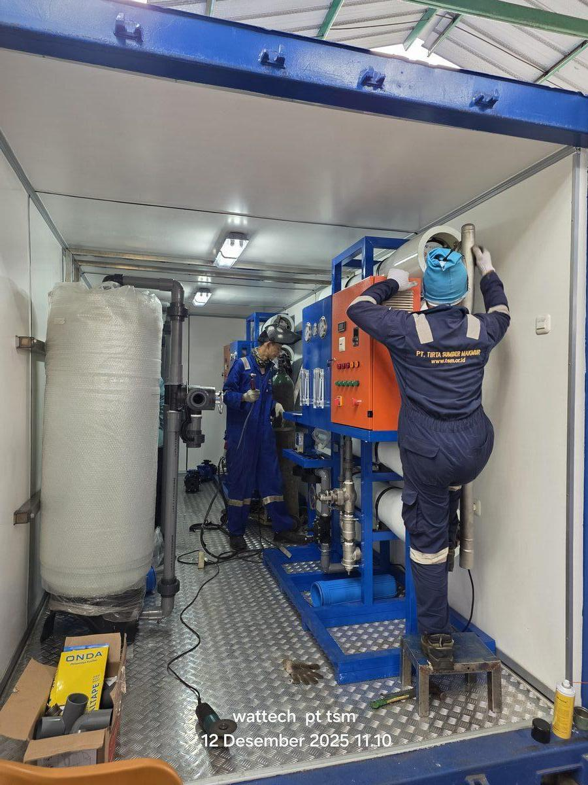

Unit RO mobile yang dapat dipindah-pindah, ideal untuk proyek konstruksi, penanganan bencana, event, dan lokasi temporer yang membutuhkan air bersih segera.

RO mobile dan RO kontainer adalah solusi water treatment yang dapat dipindah-pindahkan, dirancang untuk lokasi yang membutuhkan air bersih cepat tanpa instalasi permanen: penanganan bencana alam, kawasan tambang remote, platform offshore, kapal kerja, event berskala besar, hingga kepulauan terpencil yang sulit dipasok air tawar dari daratan.
PT Tirta Sumber Makmur menawarkan sistem RO mobile dalam berbagai konfigurasi: kontainer 20 ft atau 40 ft yang siap operasi setelah disambung listrik dan air baku, skid-mounted portable untuk lokasi indoor, dan trailer-mounted untuk mobilitas tinggi. Sistem mencakup BWRO untuk air payau/tanah, SWRO untuk air laut, dan TWRO untuk air ledeng. Kapasitas yang tersedia dari 1 hingga 200 m³ per hari, sudah teruji di proyek-proyek strategis bersama PT Pelindo, Wintermar Offshore, KRI, dan operasi tanggap bencana BNPB.
Sistem RO mobile TSM dirancang plug-and-play: semua komponen — pompa, vessel, panel kontrol, instrumentasi, tangki, dan piping — terintegrasi dalam satu unit yang sudah ditest lengkap di workshop kami di Bekasi sebelum dikirim. Pengguna di lapangan cukup menyambung tiga koneksi: (1) input air baku, (2) output air produk, dan (3) sumber listrik — sistem siap beroperasi dalam hitungan jam.
Untuk lokasi tanpa listrik PLN, TSM dapat mengintegrasikan genset diesel atau bahkan panel surya dalam kontainer. Semua kontainer menggunakan struktur ISO standar sehingga dapat diangkut dengan truk, kapal, atau kereta tanpa modifikasi khusus. Kontainer 20 ft umumnya menampung kapasitas 5–30 m³/hari, sementara kontainer 40 ft dapat menampung 30–100 m³/hari atau dua sistem terpisah (BWRO dan SWRO) sebagai redundancy.
| Kapasitas | 500 L/jam – 10 m³/jam |
| Sumber Daya | Listrik / Generator / Solar Panel |
| Berat | 80 – 500 kg (tergantung model) |
| Dimensi | Skid / Trailer / Container |
| TDS Output | < 200 ppm |
| Mobilitas | Roda / Trailer / Kontainer |
Mobilitas dan kecepatan deployment adalah inti dari sistem ini — namun TSM tidak mengkompromikan kualitas engineering:
SWRO Kontainer untuk Resort Pulau Ayer — TSM mengirim sistem SWRO 30 m³/hari dalam kontainer 40 ft yang dimuat ke kapal dari Jakarta. Sistem dipasang dan commissioned dalam 5 hari di pulau, langsung menggantikan ketergantungan resort pada pengiriman air kapal mingguan. Total waktu dari order hingga produksi air: 9 minggu.
RO Mobile untuk Wintermar Offshore — Unit watermaker BWRO/SWRO 20 m³/hari dipasang di kapal offshore Wintermar yang melayani support platform migas. Sistem dirancang vibration-resistant dan dapat berpindah antar kapal sesuai kebutuhan operasional. Maintenance tetap dilakukan tim TSM saat kapal docking di Batam atau Jakarta.
Untuk skenario tanggap bencana, TSM mempertahankan beberapa unit kontainer SWRO/BWRO siap kirim dalam 48 jam ke lokasi yang dapat dijangkau truk atau kapal. Sistem dapat beroperasi dalam 24 jam setelah tiba dengan genset onboard.
Ya. TSM merancang RO mobile dengan konfigurasi yang sesuai sumber air: TWRO untuk air PDAM/sumur dangkal, BWRO untuk air sumur dalam dengan TDS tinggi, dan SWRO untuk air laut. Beberapa unit dual-mode dapat beroperasi pada beberapa tipe sumber dengan penyesuaian setting.
Ya, TSM menyediakan skema rental dengan periode minimum 1 bulan. Paket termasuk delivery, instalasi, operator on-site (opsional), maintenance, dan demobilisasi. Sangat cocok untuk proyek konstruksi, event, atau bridging sebelum sistem permanen siap.
Kontainer dapat dilengkapi genset diesel sesuai kebutuhan kapasitas (umumnya 30–80 kVA). Untuk lokasi off-grid jangka panjang, TSM menawarkan opsi hybrid solar + battery + genset yang menurunkan konsumsi solar 60–80%.
Ya. Kami sudah mengirim sistem ke Maluku, NTT, Papua, Kalimantan, dan kepulauan lain via kapal feeder dan kapal tradisional. Tim TSM ikut mendampingi instalasi dan training operator lokal sehingga sistem dapat dioperasikan secara mandiri.
Mobilitas, kecepatan deployment, dan kualitas engineering — itulah yang membedakan RO mobile TSM dari kompetitor. Tim kami siap membantu mendesain sistem yang tepat untuk lokasi Anda, baik untuk kebutuhan permanen di pulau terpencil, operasi offshore, maupun rental jangka pendek untuk proyek atau emergency.
Tim engineer kami siap membantu Anda menentukan spesifikasi yang tepat sesuai kebutuhan.